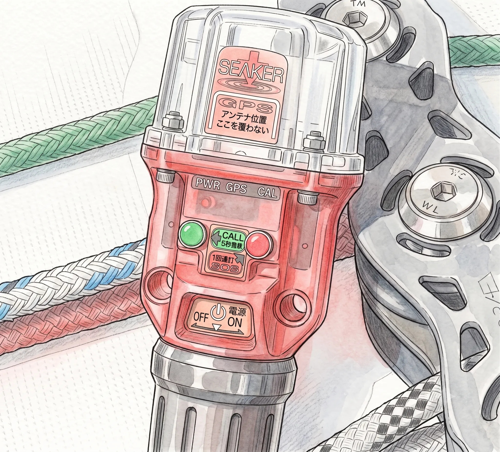
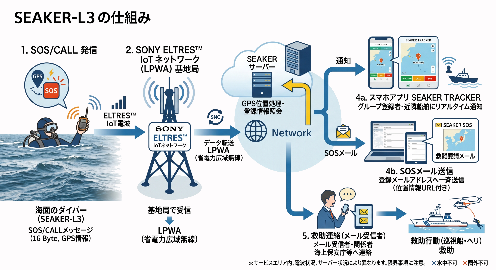

The road Orz passed by 2026 年 06 月
06 月 08 日 ( 月 )
Dive #163 漂流対策電子デバイス (1) SEAKER-L3 まとめ
なぜダイビングの世界に登山のココヘリのようなサービスがないのだろうか？と思っていろいろ調べた結果を "日本国内で使用可能なダイバーロスト漂流対策製品・サービス" の一覧を gist にまとめました。
今日からそれぞれのサービスや製品の説明をしていきたいと思います。今日取り上げるのはクアドラプランニング社 の製品である SEAKER-L3 になります。
1. 概要

- 製品名:
- SEAKER-L3
- 問い合わせ先:
- クアドラプランニング株式会社
- サービスエリア:
- 日本国内 (注: 全域ではない)
- 通信方式:
- SONY ELTRES™ IoTネットワーク (LPWA)
- 受信方式:
- スマホアプリまたは Email (つまり Internet)
- 特徴
-
- サービスエリアは SONY ELTRES™ IoTネットワーク (LPWA) のサービスエリア内
Yahoo 知恵袋にて京セラの Sigfox 網を使うと書いてしまいましたが間違いです。伏してお詫び申し上げます。 - 100km ほど離れていても受信基地局に電波が届く
- 無線使用免許不要、無線基地局免許不要
- 水深 45m までの耐圧機能
- 1 メッセージのサイズ 16 Byte (128 bit)
- トラッキングモード、CALL モード、SOS モードの３つのモードがある (後述)
- スマホアプリ SEAKER TRACKER で SEAKER-L3 携帯者の現在位置をリアルタイムに知ることができる (条件あり。後述)
- サービスエリアは SONY ELTRES™ IoTネットワーク (LPWA) のサービスエリア内
2. サービス提供エリア
SONY ELTRES™ IoTネットワーク (LPWA) のサービスエリアを参照してください。
3. ３つのモード
- トラッキングモード:
通常の動作モード。
位置の履歴 (トラック) と現在位置が自分のスマートフォンや、家族、友人のスマートフォン上に表示されるモードです。
後述のスマホアプリが必要です。 - CALL モード:
グループ登録されている人たちのTRACKERアプリに SEAKER-L3 携帯者が呼んでいることを知らせるモードです。
4G などの携帯電話の電波が届く範囲にいるグループ登録されている人たちのTRACKERアプリに現在位置を知らせることができます。
浮上したもののボートから離れすぎていて、たぶんボートから見えてないだろうな、っていうときなどに重宝するモードです。 - SOS モード:
SOS モードを受信した SEAKER-L3 のシステムが、あらかじめ登録されたメールアドレスに SOS 救難要請メールを一斉送信します。
またSEAKER-L3 システムが SOS モードを発信した近隣の TRACKER アプリに GPS 情報と共に SOS 信号を通知します。
TRACKER アプリを入れていれば SEAKER-L3 を使っていない船舶でも、要救助者の救助に向かうことができます。
4. アプリ
5. 大まかな仕組み

SEAKER-L3 から出た信号は SONY ELTRES™ IoTネットワークの基地局で受信されます。受信された信号はシステムのサーバーに送られ、必要な処理が行われて登録されているスマホに向けて配信されます。
配信先のスマホが携帯の電波が届くボート上にあるのであれば、SEAKER-L4 の信号はそのボートに届きます。この場合 CALL モードを使えば「浮上したから拾ってーっ」っていうことができます。
SOS モードで発信すると先に述べたように SEAKER-L3 のシステムから登録メールアドレス宛に救難要請メールが送られます。救難要請メールを受信した人は海上保安庁などに救助要請をすることができます。
また SOS モードでは SOS 発信した SEAKER-L3 の近隣の TRACKER アプリに救助要請メッセージが送られますので、近隣船舶による救助も期待できます。
6. SEAKER-L3 の限界
- SONY ELTRES™ IoTネットワークを使用しますのでサービスエリア外だとシステムにつがなりません。
- SEAKER-L3 が発する電波を基地局が受信するのですから水中では役に立ちません。
- 波高 3m まで通信可能とありますが、山などの大きな遮蔽物があると電波はとどきません。
- ネットやサーバーがダウンすると通信ができません。
- 何らかの理由で、受信機であるスマホの電源が落ちていると通信ができません。
- 受信機が携帯の電波が届かない場所にあると、受信ができません。
以上のことを知り、サービスエリアを確認して購入するかしないのかを決めると良いと思います。
- Category :
- #Records of Orz's Road
- #ダイビング
- #スクーバダイビング
- #スキンダイビング
- #フリーダイビング
- #テクニカルダイビング
- #スノーケリング
- #SEAKER-L3
- #漂流事故対策